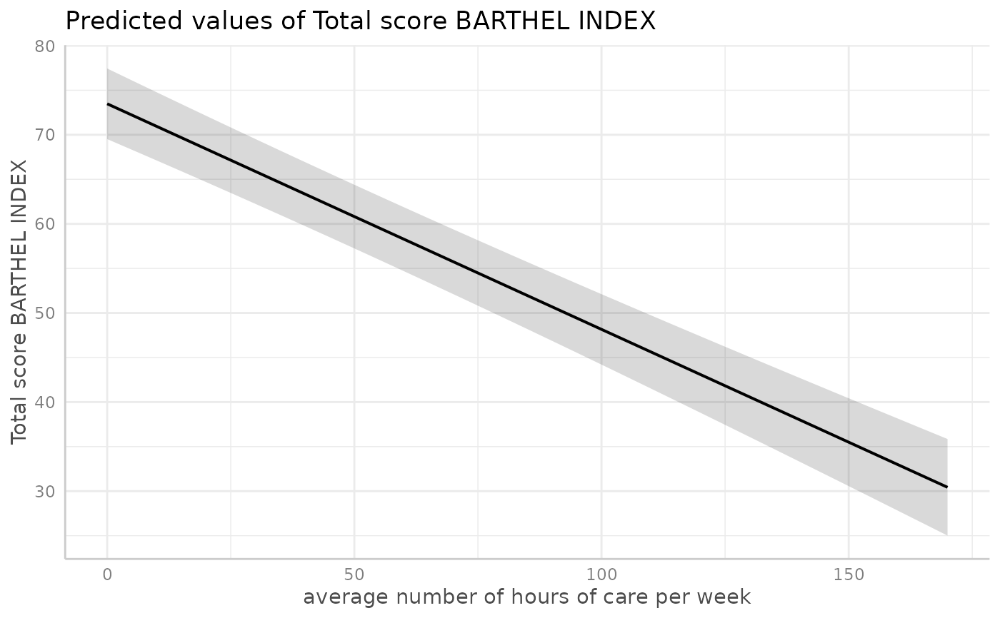
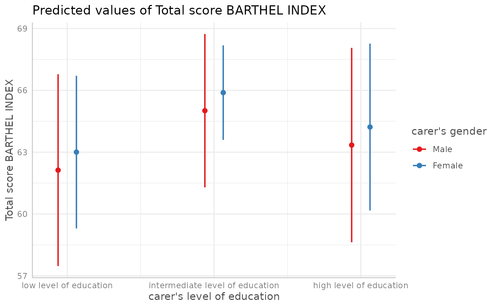
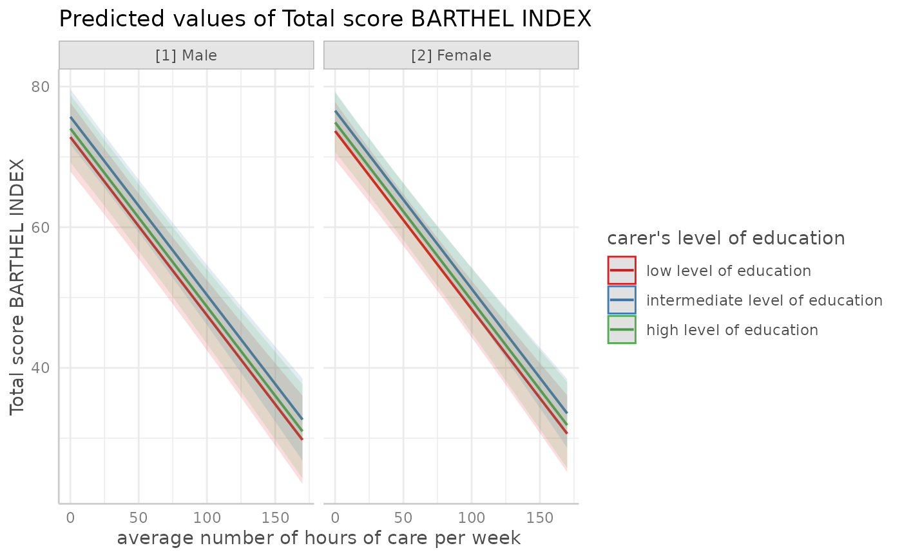
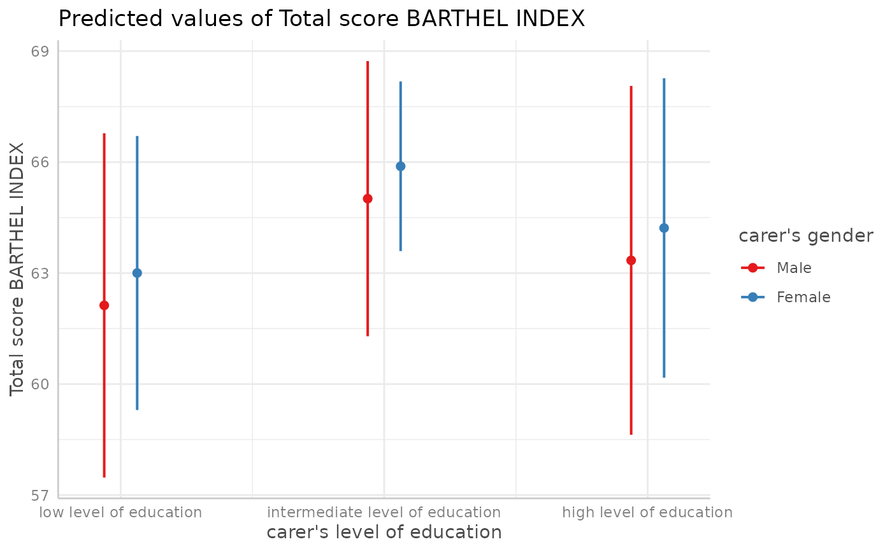
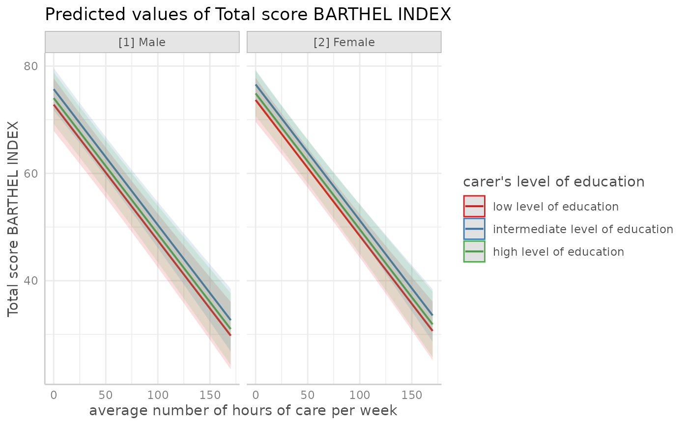

A generic plot-method for ggeffects-objects.
Usage
# S3 method for ggeffects
plot(
x,
show_ci = TRUE,
ci_style = c("ribbon", "errorbar", "dash", "dot"),
show_data = FALSE,
show_residuals = FALSE,
show_residuals_line = FALSE,
data_labels = FALSE,
limit_range = FALSE,
collapse_group = FALSE,
show_legend = TRUE,
show_title = TRUE,
show_x_title = TRUE,
show_y_title = TRUE,
case = NULL,
colors = NULL,
alpha = 0.15,
dot_alpha = 0.35,
jitter = NULL,
dodge = 0.25,
dot_size = NULL,
line_size = NULL,
use_theme = TRUE,
log_y = FALSE,
connect_lines = FALSE,
facets,
grid,
one_plot = TRUE,
verbose = TRUE,
ci = show_ci,
ci.style = ci_style,
rawdata = show_data,
add.data = show_data,
residuals = show_residuals,
residuals.line = show_residuals_line,
label.data = data_labels,
limit.range = limit_range,
collapse.group = collapse_group,
dot.alpha = dot_alpha,
dot.size = dot_size,
line.size = line_size,
connect.lines = connect_lines,
show.title = show_title,
show.x.title = show_x_title,
show.y.title = show_y_title,
use.theme = use_theme,
show.legend = show_legend,
one.plot = one_plot,
log.y = log_y,
...
)
theme_ggeffects(base_size = 11, base_family = "")
show_pals()Arguments
- x
An object of class
ggeffects, as returned by the functions from this package.- show_ci
Logical, if
TRUE, confidence bands (for continuous variables at x-axis) resp. error bars (for factors at x-axis) are plotted.- ci_style
Character vector, indicating the style of the confidence bands. May be either
"ribbon","errorbar","dash"or"dot", to plot a ribbon, error bars, or dashed or dotted lines as confidence bands.- show_data
Logical, if
TRUE, a layer with raw data from response by predictor on the x-axis, plotted as point-geoms, is added to the plot.- show_residuals
Logical, if
TRUE, a layer with partial residuals is added to the plot. See vignette Effect Displays with Partial Residuals. from effects for more details on partial residual plots.- show_residuals_line
Logical, if
TRUE, a loess-fit line is added to the partial residuals plot. Only applies ifresidualsisTRUE.- data_labels
Logical, if
TRUEand row names in data are available, data points will be labelled by their related row name.- limit_range
Logical, if
TRUE, limits the range of the prediction bands to the range of the data.- collapse_group
For mixed effects models, name of the grouping variable of random effects. If
collapse_group = TRUE, data points "collapsed" by the first random effect groups are added to the plot. Else, ifcollapse_groupis a name of a group factor, data is collapsed by that specific random effect. Seecollapse_by_group()for further details.- show_legend
Logical, shows or hides the plot legend.
- show_title
Logical, shows or hides the plot title-
- show_x_title
Logical, shows or hides the plot title for the x-axis.
- show_y_title
Logical, shows or hides the plot title for the y-axis.
- case
Desired target case. Labels will automatically converted into the specified character case. See
?sjlabelled::convert_casefor more details on this argument.- colors
Character vector with color values in hex-format, valid color value names (see
demo("colors")) or a name of a ggeffects-color-palette.Following options are valid for
colors:If not specified, the color brewer palette
"Set1"will be used.If
"gs", a greyscale will be used.If
"bw", the plot is black/white and uses different line types to distinguish groups.There are some pre-defined color-palettes in this package that can be used, e.g.
colors = "metro". Seeshow_pals()to show all available palettes.Else specify own color values or names as vector (e.g.
colors = c("#f00000", "#00ff00")).
- alpha
Alpha value for the confidence bands.
- dot_alpha
Alpha value for data points, when
show_data = TRUE.- jitter
Numeric, between 0 and 1. If not
NULLandshow_data = TRUE, adds a small amount of random variation to the location of data points dots, to avoid overplotting. Hence the points don't reflect exact values in the data. May also be a numeric vector of length two, to add different horizontal and vertical jittering. For binary outcomes, raw data is not jittered by default to avoid that data points exceed the axis limits.- dodge
Value for offsetting or shifting error bars, to avoid overlapping. Only applies, if a factor is plotted at the x-axis (in such cases, the confidence bands are replaced by error bars automatically), or if
ci_style = "errorbars".- dot_size
Numeric, size of the point geoms.
- line_size
Numeric, size of the line geoms.
- use_theme
Logical, if
TRUE, a slightly tweaked version of ggplot's minimal-theme,theme_ggeffects(), is applied to the plot. IfFALSE, no theme-modifications are applied.- log_y
Logical, if
TRUE, the y-axis scale is log-transformed. This might be useful for binomial models with predicted probabilities on the y-axis.- connect_lines
Logical, if
TRUEand plot has point-geoms with error bars (this is usually the case when the x-axis is discrete), points of same groups will be connected with a line.- facets, grid
Logical, defaults to
TRUEifxhas a column namedfacet, and defaults toFALSEifxhas no such column. Setfacets = TRUEto wrap the plot into facets even for grouping variables (see 'Examples').gridis an alias forfacets.- one_plot
Logical, if
TRUEandxhas apanelcolumn (i.e. when fourtermswere used), a single, integrated plot is produced.- verbose
Logical, toggle warnings and messages.
- ci, add.data, rawdata, residuals, residuals.line, label.data, limit.range, collapse.group, dot.alpha, dot.size, line.size, connect.lines, show.title, show.x.title, show.y.title, use.theme, one.plot, ci.style, show.legend, log.y
Deprecated arguments. Use
show_ci,show_data,show_residuals,show_residuals_line,data_labels,limit_range,collapse_group,dot_alpha,dot_size,line_size,connect_lines,show_title,show_x_title,show_y_title,use_theme,ci_style,show_legend,log_yandone_plotinstead.- ...
Further arguments passed down to
ggplot::scale_y*(), to control the appearance of the y-axis.- base_size
Base font size.
- base_family
Base font family.
Details
For proportional odds logistic regression (see ?MASS::polr)
or cumulative link models in general, plots are automatically facetted
by response.level, which indicates the grouping of predictions based on
the level of the model's response.
Note
Load library(ggplot2) and use theme_set(theme_ggeffects()) to set
the ggeffects-theme as default plotting theme. You can then use further
plot-modifiers, e.g. from sjPlot, like legend_style() or font_size()
without losing the theme-modifications.
There are pre-defined colour palettes in this package. Use show_pals()
to show all available colour palettes.
Partial Residuals
For generalized linear models (glms), residualized scores are
computed as inv.link(link(Y) + r) where Y are the predicted
values on the response scale, and r are the working residuals.
For (generalized) linear mixed models, the random effect are also
partialled out.
Examples
library(sjlabelled)
data(efc)
efc$c172code <- as_label(efc$c172code)
fit <- lm(barthtot ~ c12hour + neg_c_7 + c161sex + c172code, data = efc)
dat <- ggpredict(fit, terms = "c12hour")
plot(dat)

# \donttest{
# facet by group, use pre-defined color palette
dat <- ggpredict(fit, terms = c("c12hour", "c172code"))
plot(dat, facet = TRUE, colors = "hero")
 # don't use facets, b/w figure, w/o confidence bands
dat <- ggpredict(fit, terms = c("c12hour", "c172code"))
plot(dat, colors = "bw", show_ci = FALSE)
# don't use facets, b/w figure, w/o confidence bands
dat <- ggpredict(fit, terms = c("c12hour", "c172code"))
plot(dat, colors = "bw", show_ci = FALSE)
 # factor at x axis, plot exact data points and error bars
dat <- ggpredict(fit, terms = c("c172code", "c161sex"))
plot(dat)

# for three variables, automatic facetting
dat <- ggpredict(fit, terms = c("c12hour", "c172code", "c161sex"))
plot(dat)

# }
# show all color palettes
show_pals()
# factor at x axis, plot exact data points and error bars
dat <- ggpredict(fit, terms = c("c172code", "c161sex"))
plot(dat)

# for three variables, automatic facetting
dat <- ggpredict(fit, terms = c("c12hour", "c172code", "c161sex"))
plot(dat)

# }
# show all color palettes
show_pals()